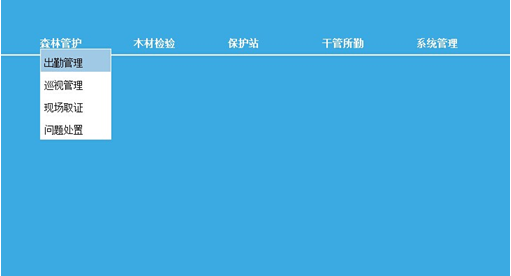
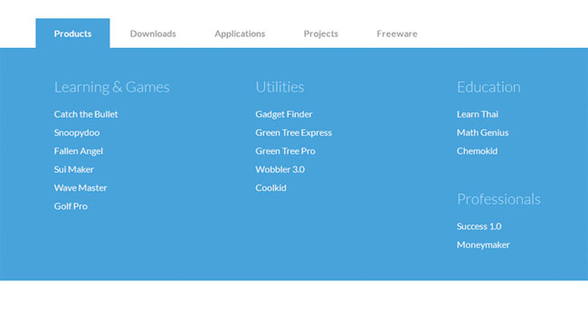

下拉菜单或导航是我们在网站开发中不可或缺的网站元素之一，使用jquery可以制作出简洁易用，美观大方的下拉菜单效果或是导航菜单，jquery是一个轻量级的JavaScript框架，可以兼容CSS3和各种主流浏览器，同时还有许多成熟的插件可供选择，能给用户带来更好的使用体验。下面为大家推荐几个优秀的jquery下拉菜单及导航菜单的代码下载资源以供参考选择。首先还是先以代码实例来看下一个基础的下拉菜单是如何实现的：
首先要在页面引用jquery.js，版本不限 ；
HTML代码如下：
<div class=”header_menu”>
<ul>
<li class=”menuli” id=”xtgl_menu”>系统管理</li>
<li class=”menuli” id=”ggsq_menu”>干管所勤</li>
<li class=”menuli” id=”bhz_menu”>保护站</li>
<li class=”menuli” id=”mcjy_menu”>木材检验</li>
<li class=”menuli” id=”slgh_menu”>森林管护</li>
</ul>
</div>
<div class=”display movediv” id=”slgh_menu_div”>
<ul>
<li class=”redli”>出勤管理</li>
<li class=”redli”>巡视管理</li>
<li class=”redli”>现场取证</li>
<li class=”redli”>问题处置</li>
</ul>
</div>
<div class=”display movediv” id=”mcjy_menu_div”>
<ul>
<li class=”redli”>位置监测</li>
<li class=”redli”>检验管理</li>
</ul>
</div>
<div class=”display movediv” id=”bhz_menu_div”>
<ul>
<li class=”redli”>出勤管理</li>
<li class=”redli”>监管信息</li>
</ul>
</div>
<div class=”display movediv” id=”ggsq_menu_div”>
<ul>
<li class=”redli”>出勤管理</li>
<li class=”redli”>监管信息</li>
</ul>
</div>
<div class=”display movediv” id=”xtgl_menu_div”>
<ul>
<li class=”redli”>权限管理</li>
<li class=”redli”>设备管理</li>
</ul>
</div>
css样式代码如下：
/**头部菜单**/
.header_menu{
float:right;
width: 50%;
height: 100%;
cursor: pointer;
}
.header_menu ul{
list-style: none;
height: 100%;
}
.header_menu ul li{
float: right;
width: 20%;
color:white;
font-size:14px;
padding-top: 55px;
font-weight: bold;
}
.display{
display: none;
}
.display ul{
list-style: none;
width: 100px;
}
.display ul li{
padding-top:10px;
padding-bottom: 5px;
padding-left:5px;
cursor: pointer;
font-size: 14px;
}
.movediv{
position: fixed;
left: 0px;
top:0px;
font-size: 14px;
white;
border:1px solid white;
}
.redcolor{
#a0c9e6;
}
js脚本代码如下：
$(function() {
// 菜单绑定事件
initMenuListener();
// 下拉菜单绑定事件
initSubMenuHover();
// 下拉菜单颜色改变
initSubMenuLiHover();
});
/**
* 头部菜单绑定滑过事件
*/
function initMenuListener() {
$(“.menuli”).hover(function() {
var hideDivId = $(this).attr(“id”) + “_div”;
// 得到菜单的位置
var left = $(this).offset().left;
var top = $(this).offset().top;
var height = $(this).outerHeight();//outerHeight是获取高度，包括内边距，height是也是获取高度，不过只包括文本高度
$(“#” + hideDivId).show();
$(“#” + hideDivId).css(“left”, left);
$(“#” + hideDivId).css(“top”, top + height);
}, function() {
// 将原来的菜单隐藏
$(“.display”).hide();
});
}
/**
* 下拉菜单绑定事件
*/
function initSubMenuHover() {
$(“.display”).hover(function() {
$(this).show();
}, function() {
$(this).hide();
});
}
/**
* 下拉菜单改变颜色
*/
function initSubMenuLiHover() {
$(“.redli”).hover(function() {
$(this).addClass(“redcolor”);
}, function() {
$(this).removeClass(“redcolor”);
});
}
页面效果如下：

资源下载：
全屏大幅下拉菜单导航代码
jQuery全屏大幅下拉菜单导航代码是一款仿微软的蓝色大气全屏网站导航菜单特效。

电商网站分类导航菜单特效
jQuery电商网站分类导航菜单特效是一款兼容ie8浏览器，点击左侧的下拉菜单来查看各种商品的列表。

黑色网站导航下拉菜单代码
脚本简介jQuery黑色网站导航下拉菜单代码是一款大气下拉多层tab导航条代码。

动画下拉导航菜单代码
jQuery动画下拉导航菜单代码是一款在菜单项之间切换时，下拉菜单会根据菜单内容的大小来动态变形，效果非常有趣。

多条件筛选下拉选择框代码
jQuery多条件筛选下拉选择框代码是一款多种条件筛选的下拉菜单特效下载

Hover响应下拉导航菜单栏代码
jQuery Hover响应下拉导航菜单栏代码是一款鼠标经过，下拉显示一片子导航菜单栏目特效，排版精致，推荐下载。

input文本框点击下拉选择代码
jQuery input文本框点击下拉选择代码是一款鼠标点击input文本框下拉菜单选择代码。

响应式下拉导航菜单
jQuery响应式下拉导航菜单插件megamenu是一款兼容IE8浏览器，它使用jQuery动画作为过渡效果，并且具有响应式效果，可以无缝和wordpress集成。

适应移动端选择银行下拉列表
jQuery适应移动端选择银行下拉列表是一款适用于移动端的选择银行下拉菜单代码。

鼠标经过二级菜单下拉代码
jQuery鼠标经过二级菜单下拉代码是一款基于jQuery+CSS3实现的鼠标悬浮滑动下拉二级菜单特效。

垂直手风琴菜单列表代码
jQuery垂直手风琴菜单列表代码是一款基于jQuery+CSS3实现的用户列表导航展开收缩下拉菜单代码。

左侧下拉菜单代码
网站左侧下拉菜单jQuery代码是一款蓝色风格的适合做后台下拉菜单代码。